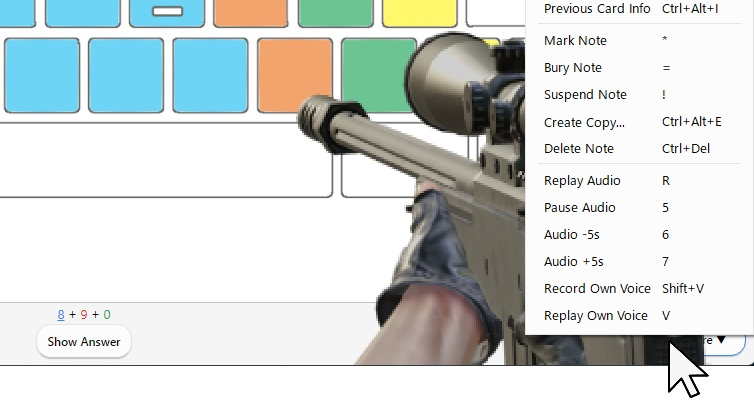

Doomanki
Doomanki - Beta Anki addon ,like FPS Game, gunshot sound and text feedback, Ambient BGM, button sound effect, Military radio.
---! Attention ! & Introduction---
This addon is still in development and in beta. When you become a Patreon, you will have early access to the beta version. Download from this download page.
(My paid addon will be released for free in the future. I will develop add-ons exclusively for Patreon first, and then release the free version. If you want it for free, please follow me and wait.)
This add-on is in early access beta and is not guaranteed to work. I think it should probably work on Mac, Linux, Anki 2.1.43?~Anki 2.1.61, and Qt6 & Qt5. But I haven't checked others yet. It works on my PC Windows, Anki 2.1.61, Qt6.
(Anki add-ons only work on PC. It does not work on smartphones Anki Mobile or AnkiDroid.)
Doomanki - Beta Anki addon
=== Description ===
Anki addon like FPS game(first person shooter, like Doom + Anki). When you answer, gun animations, gunshot sounds, explosions, and text feedback , Military radio voices are played, will occur.
In addition, ambient sounds are automatically played randomly (wind, bonfire, rain, blizzard, thunderstorm).
=== Answer feedback ===

- Again ... gun reload
- Hard ... submachine gun
- Good ... Sniper Rifle
- Easy ... Rocket Launcher
Undo .... health point recovery (No text, only V3 scheduler)
=== Option ===
Each feedback can be turned on/off in the add-on configuration. (Anki menu - tools - Add-ons - Config) Please restart Anki after setting.
- "BGM_sound": true, ... Ambient sounds on/off. true or false.
- "FPS_effect": true, ....Explosion on/off.true or false.
- "answer_text_scale": 0.5, ....Text scaling. For example 0.5, ~1, ~ 2.
- "answer_text_time": 2000, ....The number of seconds the text is displayed. 2000 = 2 seconds.
- "button_sound": true, ....Anki button sounds on/off. true or false.
- "military_radio": true, ....Military radio voice on/off. true or false.
- "popup_text": true ....Answer feedback text (Good, Again, Hard, Easy) on/off. true or false.
- "FPS_gun_scale": 2, ....Scale the gun image. For example, 1 ,~ 1.5, ~2. If the gun animation overlaps your answer, set the scale to 1 ~ 1.5 to make the image smaller.
Anything below the image is clickable. Like this.

If your Anki window is too narrow, the animation will be choppy. Like this.
=== Others & Problems ===
- It supports dark mode and light mode.
- Currently, undo sounds are only compatible with the V3 scheduler.
- The undo sound is very rare and misbehaves. It's not actually undoing, so it doesn't affect your learning.
- Very rarely, there is a bug that freezes. I'm still looking into the cause.
- It may slow down if you use it for a lot of time. Please restart Anki.
- Basically, there should be almost no interference with other addons. however, When used together with the add-on Anki Habitica, the animation will be slightly delayed. This may be because Anki Habitica is communicating when it responds.There is no problem in operation.
- Possibly, depending on the performance of the personal computer, the operation of the add-on may be slow. I have not checked it yet.
=== When a bug occurs ===

-
If a fatal bug occurs in Anki add-ons, Anki may not be able to start. In this case, please start Anki while holding down the Shift key. You can start Anki without loading add-ons. Then disable the add-on in settings.
-
Also, if a fatal bug occurs, you may not be able to close Anki. In this case, restart your PC , or start Task Manager and end Anki.
=== Maybe future development ? ===
- FPS button (About half completed)
- Other gun animations (after code refactoring)
- Volume adjustment (currently not adjustable yet)
- Add settings window ===↓↓↓Download ↓↓↓===
Download from this download page.
Thank you for reading! If you like this add-on, please hit the heart button. Enjoy Anki!